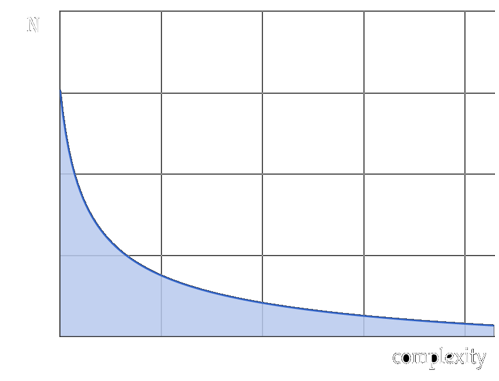
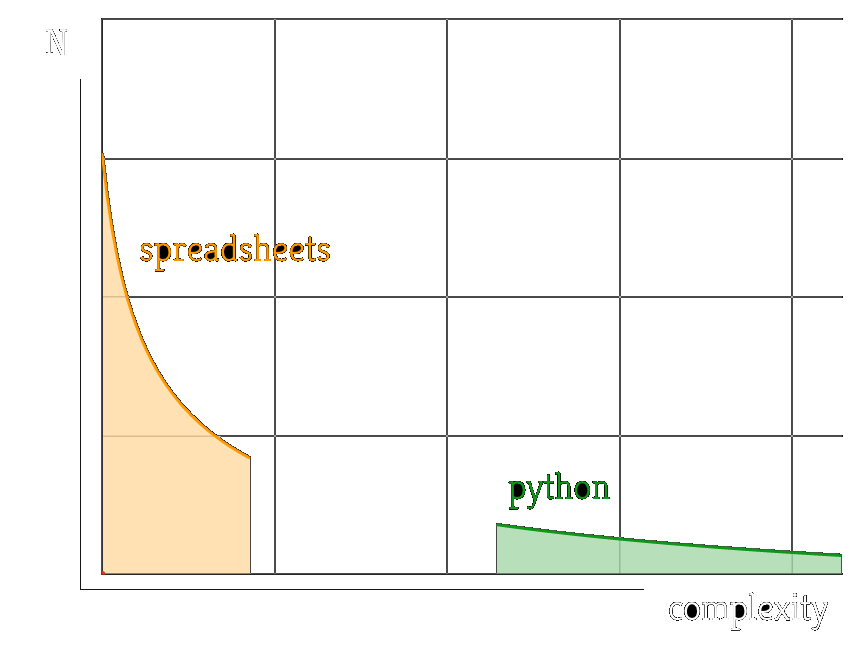
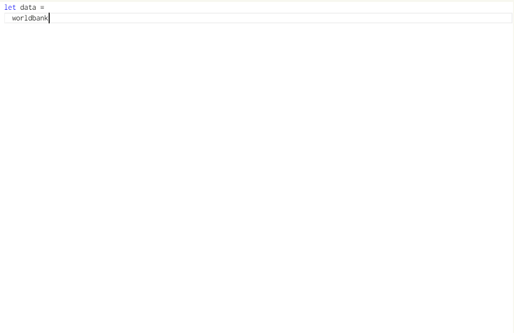
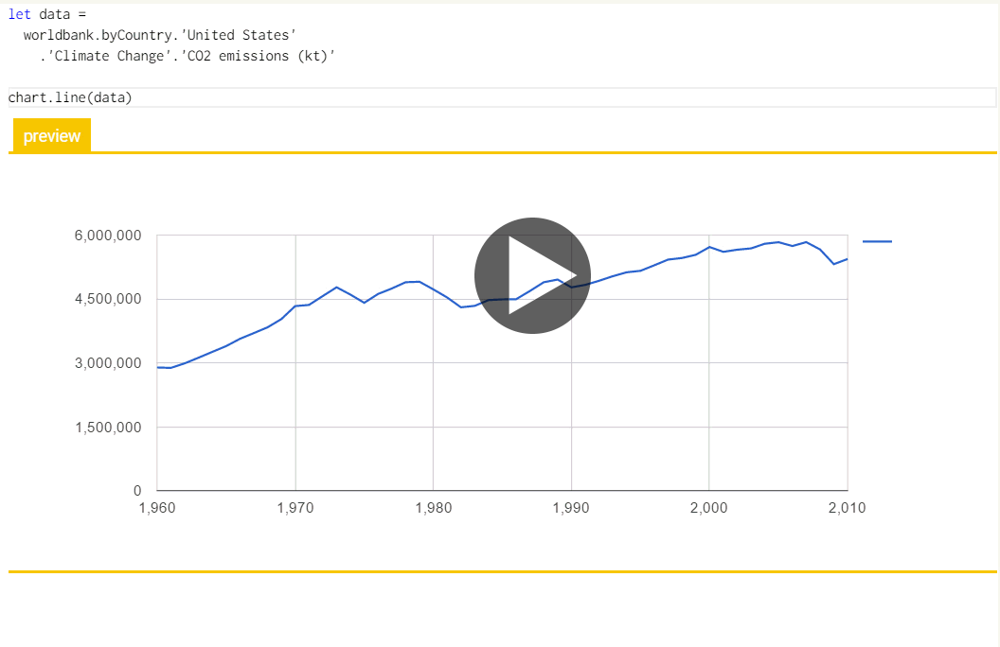

Democratizing data science
Open programming tools for the age of data
Tomas Petricek, tomas@tomasp.net
@tomaspetricek | tomasp.net/academic
Background and approach
Programming tools for data science
Why programming languages & tools?
Have the power to change what & how we think
Programming tools for data science
Data as a first-class language construct
Abstractions for interactive data science
Context-aware programming (ICALP '13, ICFP '14)
Theory with data science applications such as provenance
F# tools for data science (PLDI 2016, ACM SRC 2014)
Type providers for CSV, XML, JSON and open-source tools
Research vision
Democratizing data science
Open, engaging data-driven storytelling
Visualizations linked to trustworthy data source
Encourage active reading and exploration
Project proposal
Tools for open data-driven storytelling
The Gamma: Transparent data journalism


Accessing Big and Wide data sources (Turing ADAP)
Can we make all government data easy to use?
Engaging statistical data models (Turing Internships)
Can probabilistic programming encourage active reading?
Simple data-aware programming tools
Rethinking programming tools for the age of data
Open-source approach to research
Theory and open-source best work together!
Thank you!
Democratizing data science:
Open programming tools for the age of data
Tomas Petricek, tomas@tomasp.net
@tomaspetricek | tomasp.net/academic
Backup slides
Complexity of programming problems

Complexity of programming problems

Languages change how we think


Open-source approach to research
F# Data: Making structured data first-class citizens
- 282,151 downloads on NuGet repository
- 57 open-source contributors on GitHub
- distinguished paper award at PLDI '16
From a prototype (2011) to library (2013) and paper (2016)